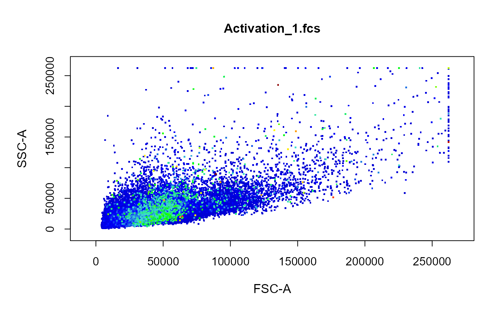

The density colour scale for points in cyto_plot can now be made to
represent fluorescent intensity of a third channel, instead of local density
in the 2D plotting space. In order for this feature to work properly, the
full range for the channel/marker of interest is required to appropriately
set the colour scale. cyto_calibrate performs this range calibration,
so that this information can be used in all downstream cyto_plot
calls.
cyto_calibrate(x, parent = "root", type = "range", probs = c(0.01, 0.99), ...)
| x | object of class |
|---|---|
| parent | name of the parent population to use for channel calibration
when a |
| type | indicates the type of calibration to perform, options include
|
| probs | vector of lower and upper probabilities passed to
|
| ... | not in use. |
saves calibration settings for use by cyto_plot.
library(CytoExploreRData) # Activation flowSet fs <- Activation # Calibration cyto_calibrate(fs) # Colour based on Hoechst-405 staining cyto_plot(fs[1], channels = c("FSC-A", "SSC-A"), point_col = "Hoechst-405")